Relatório de Critérios de Aceite — HU #10897
Resumo
Os 12 critérios de aceite da HU #10897 foram verificados: 11 no navegador, combinados com a suíte automatizada, e 1 só pela suíte (CA12, isolamento entre municípios, que exige um segundo município). Nenhum critério ficou em falta e nenhum defeito funcional foi encontrado. O CA10 foi complementado depois da HU #10898: o cancelamento do acolhimento tirou a família do perfil de acolhimento da apuração (de 1 para 0). A suíte do acolhimento teve 54 testes aprovados.
| CA | Critério | Status |
|---|---|---|
| CA01 | Registrar acolhimento em curso (happy path) | ATENDIDO · navegador + automatizado |
| CA02 | Registrar acolhimento passado | ATENDIDO · navegador + automatizado |
| CA03 | Instituição é opcional | ATENDIDO · navegador + automatizado |
| CA04 | Motivo é obrigatório | ATENDIDO · navegador + automatizado |
| CA05 | Motivo fora da trilha de auditoria | ATENDIDO · navegador + automatizado |
| CA06 | Pessoa precisa integrar a família | ATENDIDO · navegador + automatizado |
| CA07 | Data de fim anterior ao início é recusada | ATENDIDO · navegador + automatizado |
| CA08 | Vários acolhimentos para a mesma pessoa | ATENDIDO · navegador + automatizado |
| CA09 | Retroativo em período já declarado | ATENDIDO · navegador + automatizado |
| CA10 | Cancelar em vez de excluir | ATENDIDO · navegador + automatizado |
| CA11 | Negativa declara o motivo | ATENDIDO · navegador + automatizado |
| CA12 | Isolamento entre municípios | ATENDIDO · automatizado |
CA01 — Registrar acolhimento em curso (happy path) ATENDIDO · navegador + automatizado
Critério (Gherkin): Dado que sou Operacional do Tenant com o add-on LGPD, lotado no "CREAS" E que a criança Lucas, de 9 anos, integra a família Silva Quando eu registrar o acolhimento dele com data de início em 10/07/2026, sem data de fim, informando o motivo e a instituição Então o registro é salvo E consta no prontuário como acolhimento em curso, com meu nome e a data do lançamento.
Como foi testado: Login como E2E Operador Prontuário (Operacional do Tenant com add-on LGPD, lotado no E2E CRAS Centro). Prontuário da família E2E Família No CRAS, aba Acolhimento → Registrar acolhimento. Integrante E2E Integrante Local, início 10/09/2026, sem data de fim, modalidade Institucional, instituição e motivo informados. Salvar e expandir a linha.
- Toast “Acolhimento registrado no prontuário.” e a linha E2E Integrante Local · 10/09/2026 · Em curso · Institucional · <b>Em curso</b>.
- Expandida, a linha traz a assinatura “Registrado por E2E Operador Prontuário em 18/09/2026” (RN12).
- Pest (--filter=Sheltering): “registers an ongoing sheltering without end date, signed and dated”.
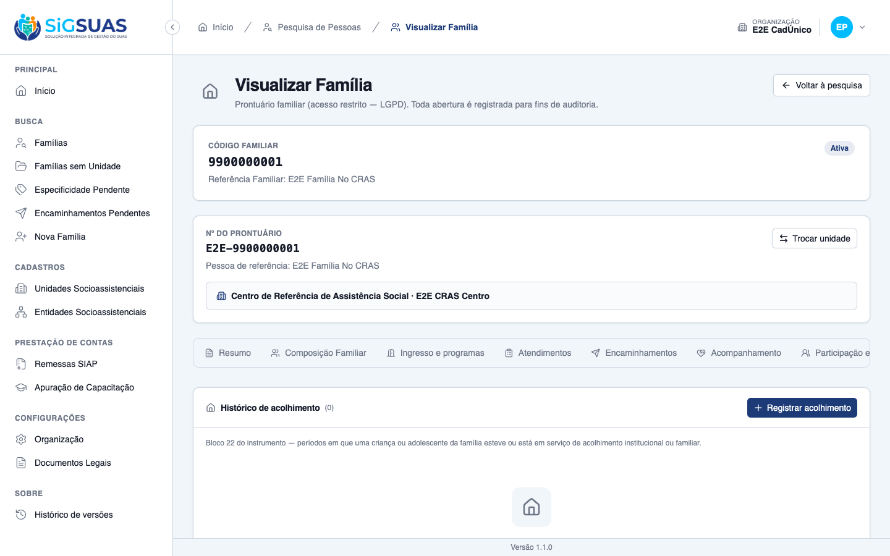
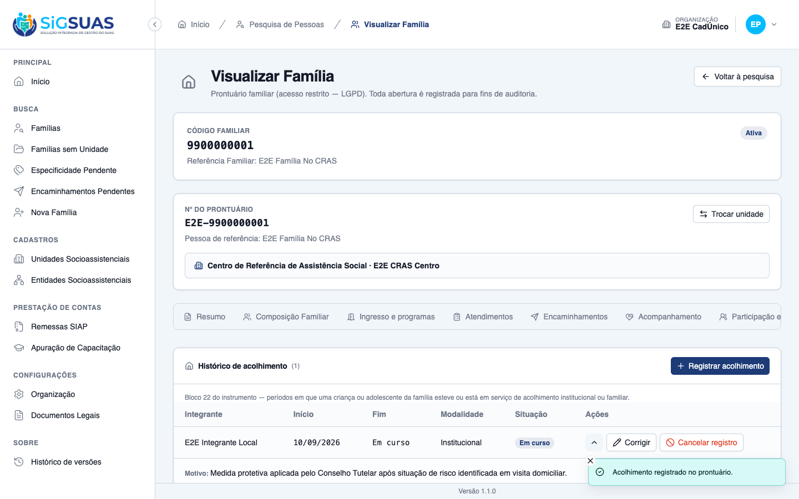
CA02 — Registrar acolhimento passado ATENDIDO · navegador + automatizado
Critério (Gherkin): Dado que a adolescente Júlia esteve acolhida entre 03/2022 e 11/2023 Quando eu registrar esse período Então o registro é salvo com as duas datas E permanece no prontuário como histórico.
Como foi testado: Novo registro para o mesmo integrante: início 01/03/2022, fim 30/11/2023, modalidade Familiar.
- A linha aparece com as duas datas e a situação <b>Encerrado</b>, permanecendo no histórico.
- Pest (--filter=Sheltering): “registers a past sheltering with both dates and keeps it as history”.
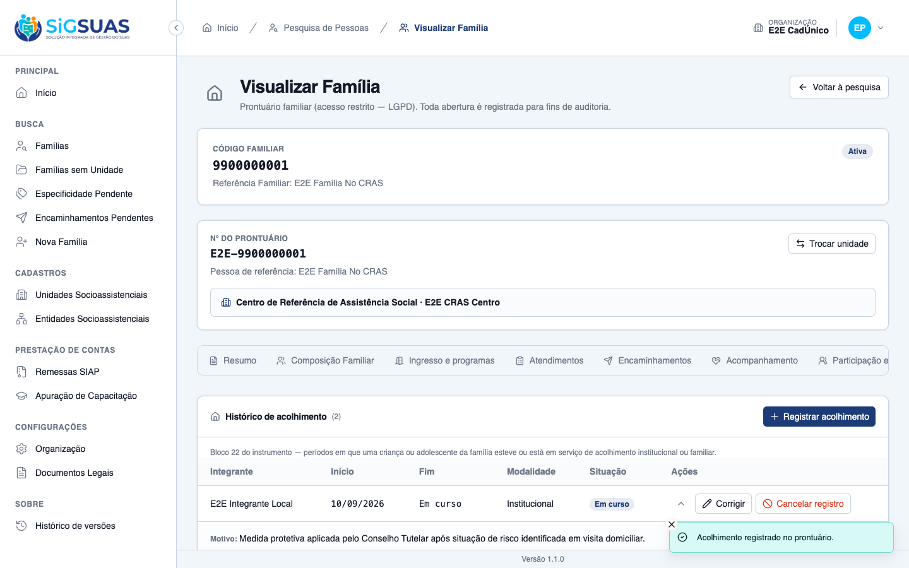
CA03 — Instituição é opcional ATENDIDO · navegador + automatizado
Critério (Gherkin): Dado que a equipe ainda não sabe em qual instituição a criança foi acolhida Quando eu salvar sem informar a instituição Então o registro é salvo normalmente.
Como foi testado: No registro do CA02, os campos de instituição e contato foram deixados em branco.
- O registro foi salvo normalmente, sem a instituição.
- Pest (--filter=Sheltering): “saves normally without any institution”.
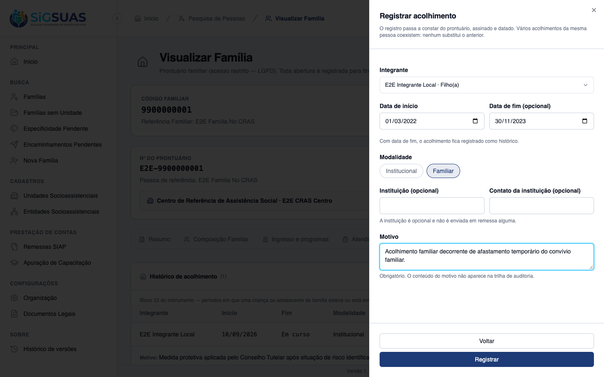
CA04 — Motivo é obrigatório ATENDIDO · navegador + automatizado
Critério (Gherkin): Dado que estou registrando um acolhimento Quando eu tentar salvar sem informar o motivo Então o registro não é salvo E o sistema indica que o motivo precisa ser informado.
Como foi testado: Novo registro para E2E Integrante Sem Nascimento, início 10/07/2026, modalidade Institucional, sem motivo. Clicar em Registrar.
- O registro não foi salvo e o campo mostra “Informe o motivo do acolhimento.”.
- Pest (--filter=Sheltering): “refuses to save without a reason and says so” (3 variações: ausente, vazio, só espaços).
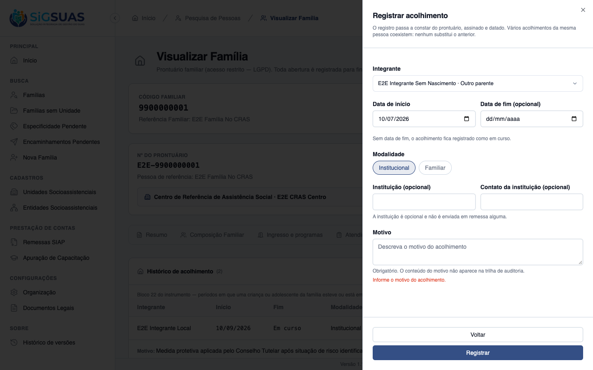
CA05 — Motivo fora da trilha de auditoria ATENDIDO · navegador + automatizado
Critério (Gherkin): Dado que corrigi o motivo de um acolhimento Quando eu consultar a trilha de auditoria Então consta que o motivo foi alterado, com autor e data E o conteúdo anterior e o novo não aparecem.
Como foi testado: No registro de 01/03/2022, Corrigir → alterar o texto do motivo → salvar. Em seguida, consulta à trilha (activity_log, log family_sheltering) no banco.
- A entrada da trilha (evento <code>updated</code>, autor = o operador, data 18/09/2026 20:22) registra só <code>sensitive_fields_changed: ["reason"]</code> e a descrição “Campos de texto livre alterados (conteúdo não registrado na trilha).”.
- Nem o texto anterior nem o novo aparecem em nenhuma coluna da linha (verificado por busca no JSON da linha; saída em <code>ca05-activity-log.txt</code>).
- Pest (--filter=Sheltering): “records THAT the reason changed, with author and date, never the content” e “keeps reason and cancel_reason out of the trail on create and cancel”.
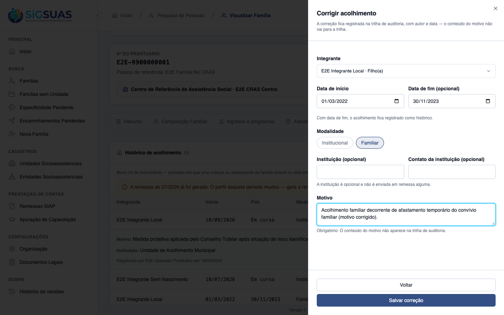
CA06 — Pessoa precisa integrar a família ATENDIDO · navegador + automatizado
Critério (Gherkin): Dado que estou registrando um acolhimento no prontuário da família Silva Quando eu tentar escolher alguém que não integra a composição vigente Então o registro não é salvo.
Como foi testado: Abrir a lista de integrantes do formulário. A família tem quatro vínculos, um deles desvinculado da composição.
- O seletor oferece só os três integrantes da composição vigente; o desvinculado não aparece.
- Pela API, integrante de outra família, desvinculado ou de outro município é recusado com 422 e nada é gravado.
- Pest (--filter=Sheltering): “refuses a member of ANOTHER family”, “refuses an UNLINKED member” e “refuses a member uuid from ANOTHER tenant with 422”.
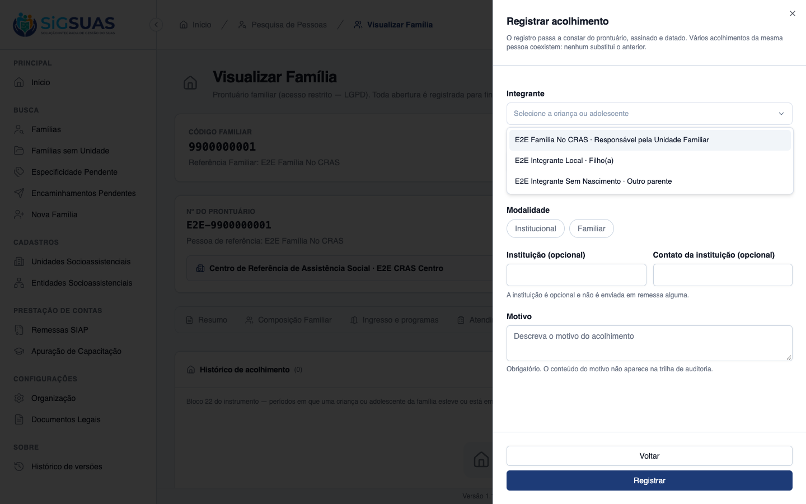
CA07 — Data de fim anterior ao início é recusada ATENDIDO · navegador + automatizado
Critério (Gherkin): Dado que informei início em 10/07/2026 Quando eu informar fim em 05/07/2026 Então o registro não é salvo.
Como foi testado: No mesmo formulário do CA04, motivo preenchido, início 10/07/2026 e fim 05/07/2026. Clicar em Registrar.
- O registro não foi salvo e o formulário mostra “A data de fim não pode ser anterior à data de início.”; a lista continuou com dois registros.
- Pest (--filter=Sheltering): “refuses an end date BEFORE the start date” e “refuses a start date in the FUTURE”.
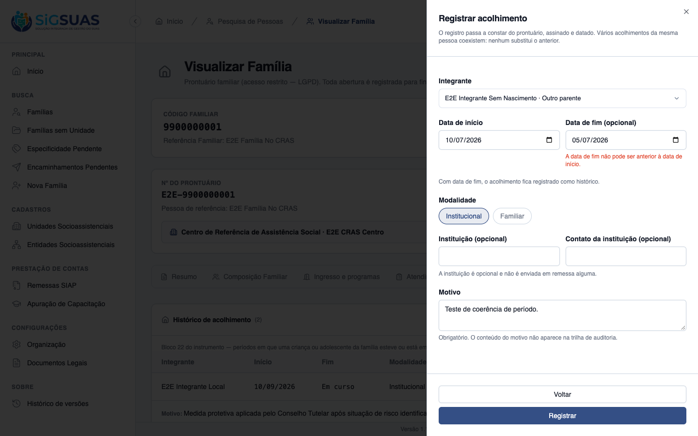
CA08 — Vários acolhimentos para a mesma pessoa ATENDIDO · navegador + automatizado
Critério (Gherkin): Dado que Lucas já teve um acolhimento encerrado em 2024 Quando eu registrar um novo acolhimento iniciado em 2026 Então os dois constam E o primeiro não foi substituído.
Como foi testado: Mesmo integrante com dois registros: o encerrado (2022–2023) e o em curso (10/09/2026).
- Os dois constam na lista; o primeiro não foi substituído.
- Pest (--filter=Sheltering): “keeps BOTH an ended and an ongoing sheltering of the same member” e “has NO unique index on the shelterings table”.
CA09 — Retroativo em período já declarado ATENDIDO · navegador + automatizado
Critério (Gherkin): Dado que a remessa da referência 07/2026 já foi gerada Quando eu registrar um acolhimento iniciado em 10/07/2026 Então o registro é salvo E o sistema avisa que o perfil daquele período mudou e que a remessa precisa ser gerada novamente caso ainda não tenha sido enviada.
Como foi testado: A remessa SIAP de referência 07/2026 já estava gerada (situação concluída) para a organização. Registro para E2E Integrante Sem Nascimento com início 10/07/2026, sem fim.
- O registro foi salvo e a tela mostrou o aviso “A remessa de 07/2026 já foi gerada. O perfil daquele período mudou — gere a remessa novamente caso ainda não tenha sido enviada.” (faixa e toast).
- Pest (--filter=Sheltering): “saves a retroactive sheltering in a remitted month WITH the regeneration warning”, “warns about the END month too”, “does NOT warn when the month has no COMPLETED remittance” e “emits the same warning when CANCELLING in a remitted month”.
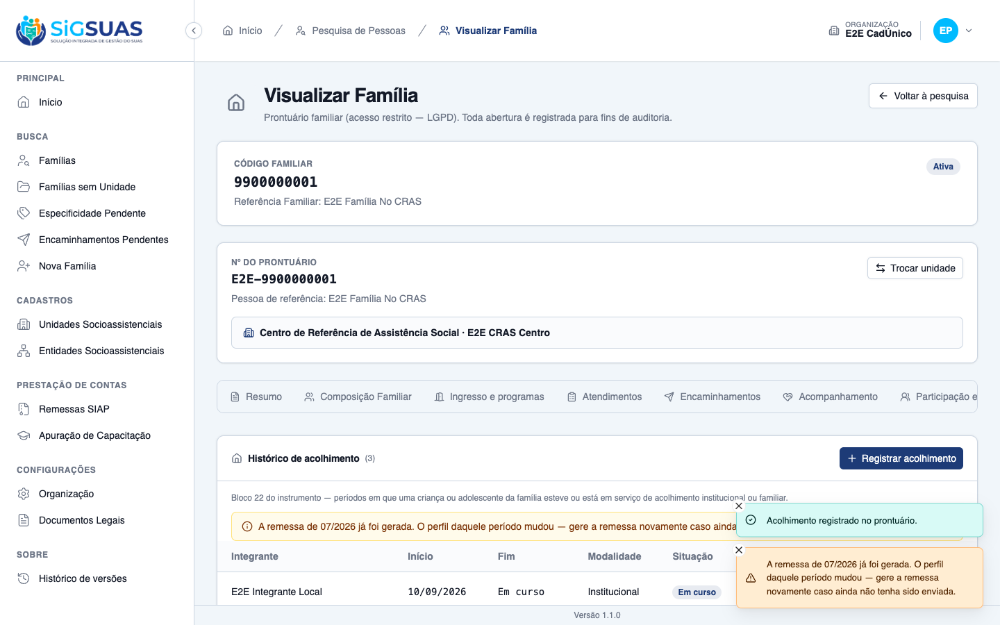
CA10 — Cancelar em vez de excluir ATENDIDO · navegador + automatizado
Critério (Gherkin): Dado que registrei um acolhimento na pessoa errada Quando eu cancelá-lo informando o motivo Então ele permanece visível marcado como cancelado E deixa de compor o perfil do período.
Como foi testado: No registro de 10/07/2026, Cancelar registro → motivo “Registrado no integrante errado.” → confirmar.
- A linha continua visível, marcada como <b>Cancelado</b>. No banco, o registro segue sem exclusão (<code>deleted_at</code> nulo), com situação cancelada e autor do cancelamento.
- A saída do perfil do período foi conferida na apuração, depois que a HU #10898 acendeu o perfil de acolhimento: com a família E2E acompanhada pelo E2E CREAS desde 01/09/2026, o perfil “Famílias com membros em serviço de acolhimento” de 09/2026 marcava <b>1</b>; após cancelar o acolhimento em curso de 10/09/2026, a mesma consulta passou a marcar <b>0</b>.
- Pest (--filter=Sheltering): “cancels instead of deleting”, “never calls delete() nor forceDelete() when cancelling”, “requires cancel_reason on the DELETE” e “answers 409 when cancelling an ALREADY cancelled sheltering”.
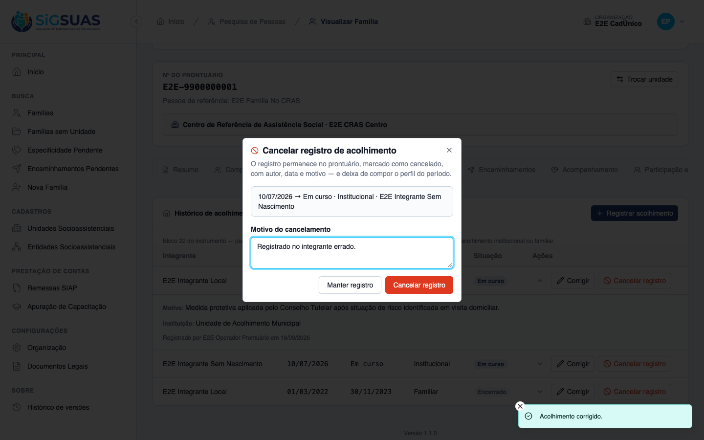
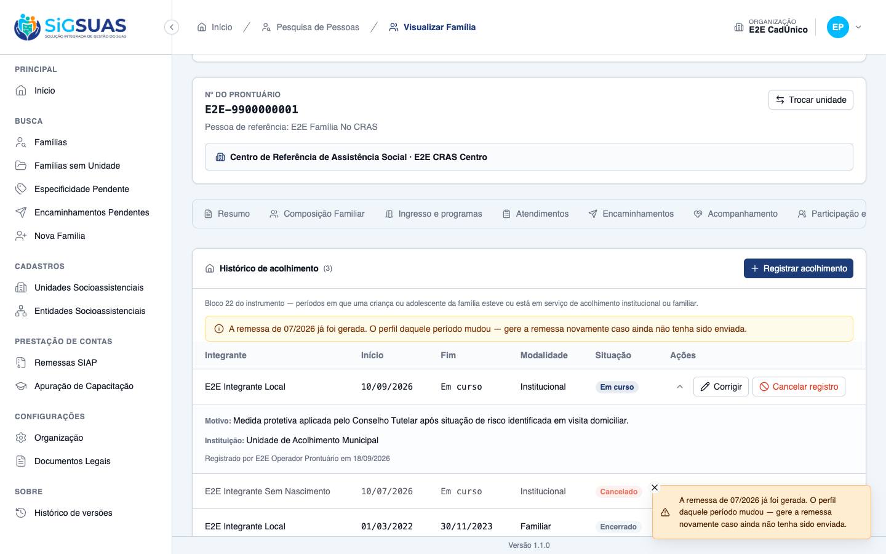
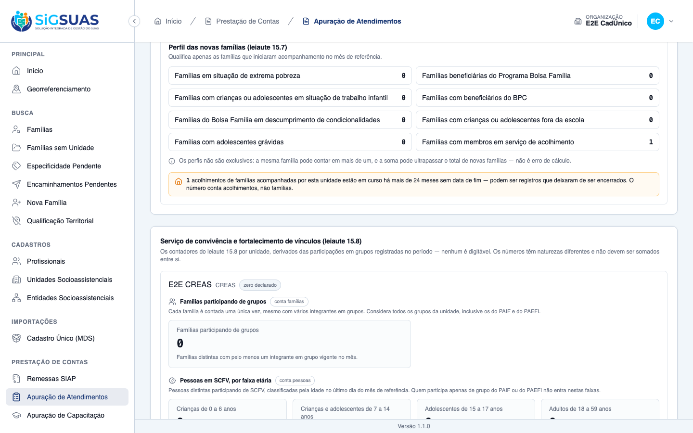

CA11 — Negativa declara o motivo ATENDIDO · navegador + automatizado
Critério (Gherkin): Dado que sou Operacional lotado apenas no "CRAS Rural" E que a família Silva é referenciada no "CRAS Centro" e acompanhada pelo "CREAS" Quando eu tentar registrar um acolhimento para ela Então não é permitido E a tela informa o motivo, sem nomear as unidades envolvidas.
Como foi testado: Login como E2E Operador Prontuário (Operacional com add-on LGPD, lotado no E2E CRAS Centro e no E2E CRAS Sem MDS) e abertura direta da aba Acolhimento do prontuário da família E2E-9900000002, referenciada no E2E CREAS, onde o operador não tem lotação.
- A tela bloqueia o prontuário com “Acesso restrito — Esta família é referenciada, acompanhada ou encaminhada a unidades onde você não possui lotação vigente. Procure o gestor Master do município.”
- Nenhuma unidade é nomeada na mensagem (conferido no texto da página: não aparece E2E CREAS, E2E CRAS Centro nem E2E CRAS Sem MDS).
- Pest (--filter=Sheltering): “answers 403 with a stable error_code, without naming the units”, “applies the same denial to the READ side and to options”, “refuses an operator WITHOUT the LGPD add-on”.
- O acesso é o mesmo ponto único do prontuário: nenhuma permissão própria de acolhimento e nenhum middleware <code>can:</code> nas rotas (testes “declares NO sheltering ability anywhere” e “carries NO can: middleware”).
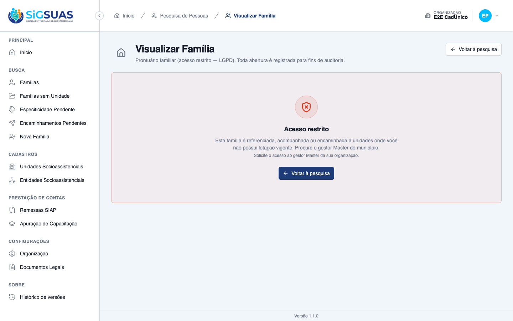
CA12 — Isolamento entre municípios ATENDIDO · automatizado
Critério (Gherkin): Dado que sou usuário do município A Quando eu registrar ou consultar acolhimentos Então alcanço somente famílias do município A.
Como foi testado: Coberto pela suíte automatizada: exige um segundo município com famílias próprias.
- Pest (--filter=Sheltering): “answers 404 — never 403 — for a family of ANOTHER tenant, on ALL routes”, “never reaches a sheltering of ANOTHER tenant through MY family uuid”, “scopes the listing by tenant_id” e “blocks the request when the X-Tenant-UUID points at a tenant the user has no access to”.
Evidência por cobertura automatizada — ver Anexo.
Observações e ressalvas
Perfil de acolhimento do leiaute 15.7
O perfil foi aceso pela HU #10898, na mesma branch. Por isso o CA10 pôde ser conferido também na apuração. A composição do 15.7 na remessa segue fora do escopo.
Decisões a confirmar com o PO
- Modalidade (RN06): o próprio ticket marca a regra como inferida. O campo Institucional/Familiar ficou obrigatório e nada no sistema depende dele.
- Aviso de remessa (CA09): só os meses de início e de fim do período disparam o aviso; meses intermediários de um acolhimento longo não disparam.
- Data de fim no futuro: hoje é aceita. A regra só proíbe início no futuro.
Observação de tela
Os avisos flutuantes (toasts) ficam sobre a coluna de ações das primeiras linhas por alguns segundos e, durante esse tempo, impedem o clique em “Corrigir”. Não afeta nenhum critério, mas vale um ajuste de posição.
Marcas deixadas na base
Ficaram na família E2E Família No CRAS: E2E Integrante Local de 01/03/2022 a 30/11/2023 (motivo corrigido) e em curso desde 10/09/2026 (cancelado na complementação do CA10); E2E Integrante Sem Nascimento desde 10/07/2026 (cancelado) e desde 01/03/2024, em curso (massa do aviso de acolhimento longo da HU #10898). A família também passou a ter acompanhamento PAEFI no E2E CREAS desde 01/09/2026.
Ambiente
Captura contra o client em :5174, identificado pelo diretório do processo. A migration da fase foi aplicada no banco de desenvolvimento antes da captura. Nenhum arquivo de configuração foi alterado.
Anexo — Cobertura automatizada (Pest, --filter=Sheltering)
PASS Tests\Unit\Models\FamilyShelteringTest ✓ it uses BelongsToTenant, HasUuid, SoftDeletes and LogsActivity (RN1… 0.33s ✓ it keeps reason, cancel_reason and the institution OUT of logOnly()… 0.01s ✓ it declares the two modalities and the two statuses (RN06/RN09) 0.01s ✓ it casts dates, modality and status, and reports an ongoing shelter… 0.06s ✓ it has NO unique index besides the uuid (RN08) 0.01s ✓ it enforces the state invariant (registered x cancelled) before eve… 0.03s PASS Tests\Feature\Api\Client\FamilyShelteringTest ✓ it registers an ongoing sheltering without end date, signed and dat… 0.08s ✓ it registers a past sheltering with both dates and keeps it as hist… 0.04s ✓ it saves normally without any institution (CA03) 0.04s ✓ it refuses to save without a reason and says so (CA04) with dataset… 0.04s ✓ it refuses to save without a reason and says so (CA04) with dataset… 0.04s ✓ it refuses to save without a reason and says so (CA04) with dataset… 0.04s ✓ it requires the modality, validated against the enum (RN06) 0.04s ✓ it offers the two modalities and the start-date ceiling through opt… 0.05s ✓ it records THAT the reason changed, with author and date, never the… 0.05s ✓ it keeps reason and cancel_reason out of the trail on create and ca… 0.04s ✓ it refuses a member of ANOTHER family (CA06) 0.04s ✓ it refuses an UNLINKED member — not part of the CURRENT composition… 0.04s ✓ it lets a correction keep the ORIGINAL member even after they were… 0.04s ✓ it refuses an end date BEFORE the start date (CA07) 0.04s ✓ it refuses a start date in the FUTURE (RN07) 0.04s ✓ it accepts a same-day period — end equal to start (RN07) 0.04s ✓ it accepts very old periods — no retroactivity limit beyond RN07 (R… 0.04s ✓ it keeps BOTH an ended and an ongoing sheltering of the same member… 0.05s ✓ it has NO unique index on the shelterings table (RN08) 0.04s ✓ it saves a retroactive sheltering in a remitted month WITH the rege… 0.04s ✓ it warns about the END month too and deduplicates months (CA09) 0.05s ✓ it does NOT warn when the month has no COMPLETED remittance (CA09) 0.04s ✓ it emits the same warning when CANCELLING in a remitted month (CA09… 0.04s ✓ it cancels instead of deleting: status cancelled, reason recorded,… 0.05s ✓ it never calls delete() nor forceDelete() when cancelling (CA10) 0.04s ✓ it requires cancel_reason on the DELETE (CA10) 0.04s ✓ it answers 409 when cancelling an ALREADY cancelled sheltering 0.04s ✓ it answers 409 when EDITING a cancelled sheltering 0.04s ✓ it corrects a sheltering registered on the WRONG member, keeping th… 0.05s ✓ it refuses server-owned fields on the write (RN09/RN12) with datase… 0.04s ✓ it refuses server-owned fields on the write (RN09/RN12) with datase… 0.05s ✓ it refuses server-owned fields on the write (RN09/RN12) with datase… 0.04s ✓ it refuses server-owned fields on the write (RN09/RN12) with datase… 0.04s ✓ it refuses server-owned fields on the write (RN09/RN12) with datase… 0.04s ✓ it refuses server-owned fields on the write (RN09/RN12) with datase… 0.04s ✓ it refuses server-owned fields on the write (RN09/RN12) with datase… 0.04s ✓ it answers an EMPTY list and asserts NOTHING about the absence (RN1… 0.04s ✓ it answers 403 with a stable error_code, without naming the units (… 0.06s ✓ it applies the same denial to the READ side and to options (CA11) 0.04s ✓ it refuses an operator WITHOUT the LGPD add-on (RN11) 0.04s ✓ it declares NO sheltering ability anywhere (RN11) 0.07s ✓ it carries NO can: middleware on the sheltering routes and is not a… 0.04s PASS Tests\Feature\TenantIsolation\FamilyShelteringIsolationTest ✓ it answers 404 — never 403 — for a family of ANOTHER tenant, on ALL… 0.06s ✓ it never reaches a sheltering of ANOTHER tenant through MY family u… 0.05s ✓ it answers 404 when the sheltering belongs to ANOTHER family of the… 0.05s ✓ it scopes the listing by tenant_id — never shows the other municipa… 0.05s ✓ it blocks the request when the X-Tenant-UUID points at a tenant the… 0.04s ✓ it refuses a member uuid from ANOTHER tenant with 422 and creates n… 0.05s Tests: 54 passed (255 assertions) Duration: 3.14s